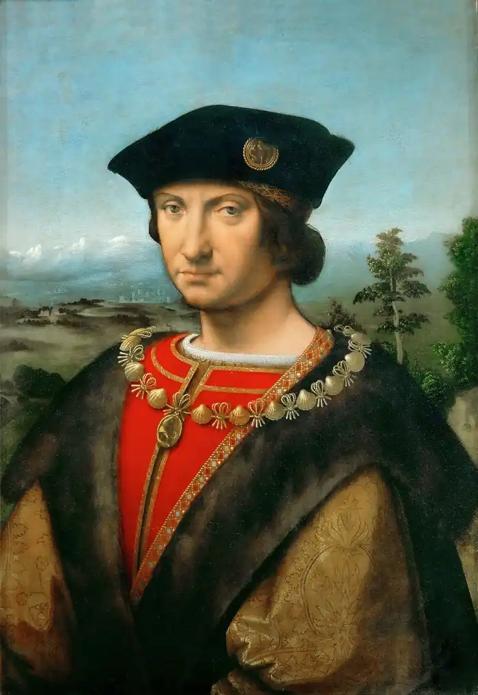

МОР, Томас (More, Sir Thomas — 07.02.1478, Лондон — 06.07.1535, там само) — англійський мислитель і політичний діяч, письменник.Мор — автор знаменитого роману "Утопія", що поклав початок утопічному жанру. Майбутній канцлер Генріха VIII, народився в сім'ї вченого-правника Джона Мора, сина рукавичника, котрий отримав від короля рицарське звання. Після закінчення школи в Сент-Антоні був відданий у дім до архієпископа та лорд-канцлера сера Мортона, котрий справив значний вплив на долю свого вихованця. Мортон передрікав, що Томас стане "незвичайною людиною", він віддав його в Оксфордський університет, де Мора став учнем перших англійських гуманістів Лінакра і Гроцина. У домі сера Мортона Мор чув розповіді про правління Річарда III і згодом склав його життєпис, який існує в латинському й англійському варіантах ("History of Richard III"). Він був опублікований 1543 p., після смерті Мора, ставши джерелом для шекспірівської хроніки та справивши вплив на подальшу англійську історіографію.
Після закінчення юридичних шкіл Нью Інн та Лінкольнз Інн Мор був готовий до прийняття духовного чину, але змінив своє рішення та став адвокатом. Це допомогло йому добре спізнати життя англійського суспільства. У 1504 р. його було обрано в парламент, де він зарекомендував себе людиною безкомпромісною та справедливою. Після смерті Генріха VIII отримав місце помічника шерифа Лондона.
У 1499 p. Мор познайомився з великим нідерландським гуманістом Еразмом Роттердамським. Знайомство відбулося під час візиту останнього в Англію. Під час свого наступного візиту Еразм замешкував у домі Мора (1509). У листі до німецького гуманіста У. фон Гуттена Еразм оповів про Мора. У своєму описі він підкреслив дотримання Мором однієї з найважливіших вимог його часу: в усьому уникати надмірності. "Тіло-будовою та статурою він не вирізняється, — писав Еразм, — та все ж про нього не можна сказати, що він невеликого зросту, оскільки в усіх частинах тіла у нього така доладність, що кращого годі й побажати. Він білошкірий, і обличчя тяжіє швидше до білості, аніж до блідості, а рум'янець рідко спалахує. Волосся в нього русяве — темне, зі світлим відтінком, чи, якщо хочеш, світле з темним відтінком. Борода не густа. Очі сіро-блакитні в цятинку, що свідчить про м'який характер, і британці особливо полюбляють такі очі... Вираз обличчя, відповідно до характеру, відкритий і сповнений веселої дружелюбності, готової посміятися при нагоді; правду кажучи, він радше радісний, аніж пихатий і серйозний... Ось тільки руки селянські... Мова його навдивовижу виразна та розбірлива... Одяг він любить простий і не ходить ні в шовку, ні в оксамиті, ні в золотих ланцюгах, якщо тільки не доводиться одягати їх задля справи. Подиву гідна його байдужість до церемоній". Еразм спільно з Мором працював над перекладами діалогів Лукіана, а також разом з однодумцями Мор брав участь в укладанні підручників для граматичних шкіл, що відкривалися в той час у Англії. Навколо Мора панувала атмосфера дружелюбності та взаємопорозуміння. Під час розмов з Мором в Еразма виник задум "Похвали тупоті", що її він присвятив М. Своє дозвілля Мор присвячував літературі. Замолоду він писав вірші та комедії, створював епіграми, писав вірші латиною про дітей, про своє юнацьке кохання, створював побутові замальовки.У 1510 p. Мор розпочав роботу над "Утопією" ("Золота книжка, така ж корисна, як забавна, про найкращий устрій держави і про новий острів Утопія" — "A fruteful and pleasaunt worke of the beste state of publyque weale, and of the newe yle called Utopia"). Латинський текст опублікований 1516 p., англійський переклад — 1551 p. Живучи в епоху великих географічних відкриттів, коли на картах з'являлися нові землі, Мор запропонував читачам приєднатися до однієї із експедицій і познайомитись із мешканцями вигаданої ним держави, грецька назва котрої "утопія" є грою схожих за звучанням слів "неіснуюча країна" і "благословенна країна". Так Мор відкрив "острівну" традицію в англійській літературі. Учасники експедиції, про яку розповідає Мор, — реальні люди, котрі жили насправді. Серед них сам автор, його покровитель кардинал Мортон, голландський гуманіст Петро Егідій, мандрівник Амеріґо Веспуччі, знайомий Егідія — Рафаїл Гітлодей, від особи котрого і ведеться розповідь. Чимало читачів повірили в реальність описаних подій. У застосованому Мором методі бере початок традиція знаменитих містифікацій у літературі. Мор висловив у своїй книзі думки про ідеально влаштовану державу і цим зробив внесок у багатовікові роздуми про щасливе суспільне життя. На його погляди безумовно вплинули легенди про "золотий вік" та ідеї древніх. Мор згадує Платона та "комунізм" перших християн. Висунута гіпотеза про те, що певний вплив на "Утопію " справили дані про общинний побут слов'янських народів. Існує думка, що свою роль відіграли й розповіді про побут індіанців. Усі мешканці Утопії повинні трудитися у міру своїх сил. На їхньому гербі сплелися серп, молот і пшеничні колоски. Вони зневажають гроші. У їхній країні із золота виготовляють лише дитячі забавки та нічні горщики. Виховані у розумній помірності, вони отримують одяг та їжу за необхідністю. Про спірність подібних суджень писатиме згодом багато хто. Але саме ця спірність змушує розмірковувати над книгою Мора. У "Королі Лірі" В. Шекспіра є рядки: Адже злидар останнійІ в злиднях має радощі якісь.Не дай людині більше, ніж їй треба, —І ти її з твариною зрівняєш.(Пер. М. Рильського)На обмежено-рівному розподілі буде збудовано щастя ідеального "Міста сонця" Т. Кампанелли. Думками про справедливо влаштоване суспільство будуть сповнені розділи про Телемське абатство Ф. Рабле, роздуми про "золотий вік" Дон Кіхота, "Нова Атлантида" Ф. Бекона розділи про королівство Брабдінгнег Дж. Свіфта, "Вісті нізвідки" В. Морріса. Розвиток ідей Мора і суперечки з ними призведуть до виникнення цілого пласту "утопічної" літератури, а в XX ст. спричинять виникнення і розвиток жанру антиутопії. Роздуми Мора поєднують публіцистику з художністю, здобрені яскравим творчим вимислом, гротескним зображенням низки ситуацій, іноді з побутописанням. Письменник описує побут утопійців, чим підсилює враження про достеменність, невигаданість оповіді. У 1521 р. Генріх VIII запросив Мора до двору і надав йому рицарське звання, а в 1523 р. за рекомендацією короля М. став спікером парламенту, потім канцлером герцогства Ланкастерського, а 1529 р. — канцлером королівства. Безкомпромісність Мора не дозволила йому підтримати політику короля стосовно Реформації. Погляди Мора перебували в суперечності з ученням Лютера про відсутність у людини свободі: волі та визначеності наперед долі кожного. 1532 р. Мор відмовився від посади. Прискоренню процесу Реформації в Англії сприяло те, що в Генріха VIII не було дітей у шлюбі з Катериною Арагонською. Мріючи про спадкоємця, він звернувся у Рим до папи Климента VII за розлученням для повторного шлюбу з Анною Болейн. Після відмови в розлученні він оголосив себе главою англіканської церкви. Мор не підтримував у цьому короля, вважаючи його дії протиправними. Королю ж було необхідне схвалення людини, відомої всій Європі. Мор був заарештований, і 6 липня 1535 р. його стратили у дворі Тауера. Під час страти Мор тримався з гідністю і навіть жартував з катом. У 1886 p. Мора було канонізовано. Після смерті Мора його книга була перекладена італійською мовою 1548 р. та видана у Венеції.У 1637 p. вона вийшла в Кордові іспанською мовою.Леся Українка у статті "Утопія в белетристиці" (1906) зазначала, що Мор, на відміну від Платона, "поставив свій колективістичний ідеал на демократичний ґрунт", а завдяки "живим малюнкам" став "нарівні з найкращими белетристами новітньої доби". "Утопію" українською мовою переклали І. Шаровольський (1931) та Й.Кобів(1988). Є. Чорноземова